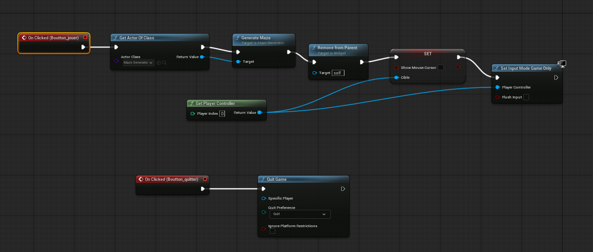
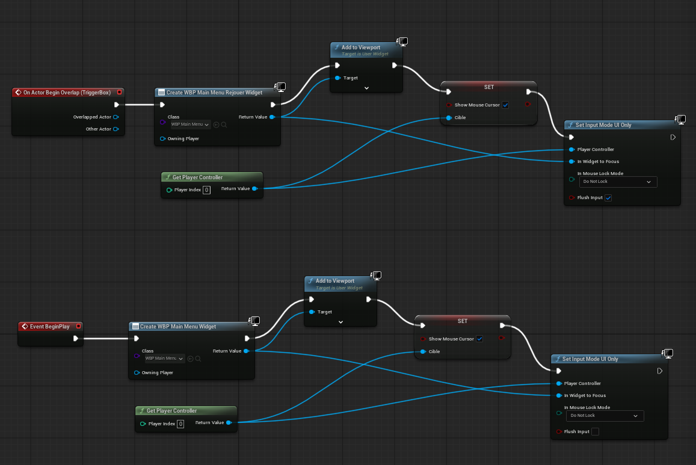

Maze Game
A 3D game of navigating a generated 2D maze.
Github LinkTheorical aspect: the code
The objective is to generate a solvable 2D maze in C++ and then convert it to a 3D maze in Unreal Engine.
Here is the approach of the generation algorithm:
- Generate a 2D grid of cells
- Use a depth-first search (DFS) algorithm to carve out paths
- Ensure the maze is solvable by guaranteeing a path from start to end
We would define the center of the maze as the starting point and an end at the top corner (fixed) so we have to ensure that this specific start point exists (not a wall) and that the end point is reachable from it.
Practical aspect: the visuals
We will here use Unreal Engine 5.6 to implement the DFS algorithm in C++ and make the maze take shape in 3D.
I created a TopDown view project in Unreal Engine to ease the begining.

After implementing the 3D maze generation in Unreal Engine, here is a screenshot of the result (in the view port and ingame):


Making the game playable
The movements were initially made with the mouse, so I added keyboard controls with the Unreal Blueprints for better navigation.
The Blueprints for walking and the result:

Before adding our own Blender-made assets we have to make a fully playable game in Unreal Engine. This involves implementing a real end condition (a winning system) and a restart mechanism.
So I added a TriggerBox at the end of the maze to detect when the player reaches the end. It automatically restart the level (with a new random generated maze) for now.
Friendly UI
Now that the game is playable, let's make it enjoyable.
I first added a simple User Interface with a start (or restart if the maze already has been completed) button and a quit button.
The Blueprints for the main menu and trigger box to manage it:


Fully playable game base
With the menu, we now have a fully playable game base:
You can download the game from Github here:
Github LinkGive a try to the game here.
Now we can focus on the visual aspect of the game and make it even more enjoyable to see (and above all more personalized).
3D Basis: the walls
I wanted to build a "unit-wall" to be used in the 3D maze construction (to replace the simple white-cube walls).
Here's the result of my work in Blender:


And here's the 3D display of the wall: